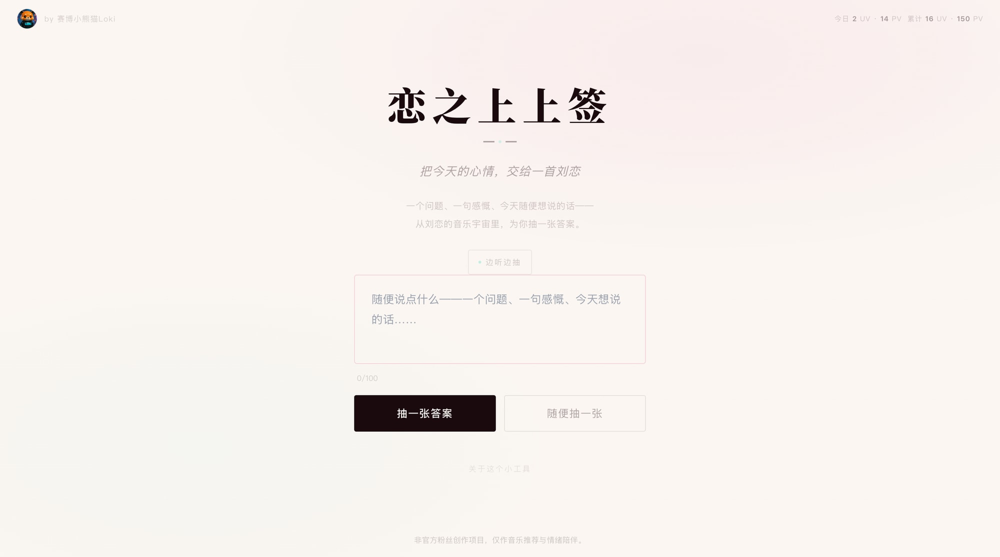

不收录完整歌词
每首歌只手工挑选少量值得分享的短句；一次只出现一句，也不提供歌词搜索与完整列表。
你写下今天的心情，它会从我亲手挑选的刘恋歌词短句里，回应一张可以保存的卡片。它只给一句歌词，不算命，也不替你解释自己。

每首歌只手工挑选少量值得分享的短句；一次只出现一句，也不提供歌词搜索与完整列表。
AI 只能在精选短句池里做匹配，不能自由生成、续写或篡改歌词。哪一句值得留下，只能由我判断。
卡片标明歌曲出处，并通向正版音乐平台；整个应用明确写着“非官方粉丝作品”。
从确定性排名改到排除已看、扩大候选与加权抽取。
我不再只说【好看一点】，开始拆刘恋的穿搭、MV、舞台光和构图。
处理浏览器导出限制，并为手机改成长按保存。
放弃脆弱的站内播放器，回到正版音乐平台。